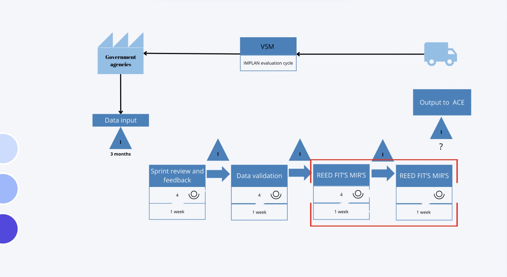

Process Optimization | Excel | Lean
April - July 2024
In this project, we collaborated with the Instituto Municipal de Planeación (IMPLAN) Puebla, a public institution responsible for coordinating urban planning, economic development, public services, community welfare, and modernization initiatives aligned with the 2030 Agenda.
IMPLAN works in collaboration with multiple governmental sub-entities that evaluate, prioritize, and authorize projects during each administration period.
Through process analysis, we identified inefficiencies in the project evaluation workflow, particularly in the stage where information was consolidated and submitted to management for approval.
Data collection and reporting were primarily managed through PowerPoint templates, requiring manual compilation from different departments. This process generated long lead times, inconsistencies, and communication delays between agencies.
The Value Stream Mapping (VSM) below illustrates the institute’s end-to-end process flow. The analysis revealed a significant bottleneck during the information consolidation stage before management review.
After identifying the critical bottleneck, our objective was to design a cost-efficient, digital solution to streamline data collection, reduce lead time, and improve information quality across departments.
Given the project constraint of a 5-week development window, we focused on creating a functional and scalable solution that minimized implementation costs while maximizing process impact.
We developed a centralized Excel-based collaborative system (integrated through Microsoft Teams) that automated key reporting functions and standardized information input across entities.
The system incorporated structured KPIs to monitor project timelines, completion status, and operational progress. Automated fields reduced manual entry errors and ensured data consistency.
By simplifying the reporting process, the solution eliminated redundant manual compilation and improved digital communication between agencies.
The proposed solution significantly improved information accuracy and reduced processing time in the project evaluation workflow.
The automation enhanced interdepartmental coordination, minimized human error, and increased transparency in project prioritization activities.
Additionally, we developed a dashboard interface to allow stakeholders to visualize project data interactively, filtering by department, timeline, and status to support strategic decision-making.